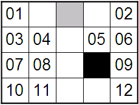

Most airports have a big flat land for airplanes to land and take off. Here is an example, where the flat land is divided into 4 rows and 5 columns. Gray squares are places to land and take off, black squares are obstacles, and squares with numbers are parking spaces.

Each airplane is assigned to a parking space. It can choose an arbitrary gray square to land on, then goes to its assigned parking space by a sequence of horizontal and vertical movements (each movement is moving one square north, south, east or west). It cannot move diagonally, nor can it move into an obstacle square or a parking space that is occupied by another airplane. Empty squares without numbers are always free to move on. After reaching its assigned parking space, the airplane waits until it's time for it to take off. Then, it goes to an arbitrary gray square to take off (not necessarily the one it landed on). Initially the flat land is empty. An assignment is feasible if every landing and taking off can be accomplished. Note that different planes might be assigned to the same parking space, as long as the schedule is feasible.
The event list is represented by a sequence of integers, where positive means landing, negative means taking off. It is guaranteed that each plane lands and takes off exactly once (at the end, the flat land is empty again).
For example, the event list +1, +2, +3, +4, +5, +6, -6, -5, -4, -3, -2, -1 has a feasible assignment 12, 09, 05, 06, 02, 10, which are the parking spaces assigned to airplane 1, 2, 3, 4, 5, 6, respectively.
Write a program to assign parking spaces to airplanes.
6 4 5 01 .. == .. 02 03 04 .. 05 06 07 08 .. ## 09 10 11 .. .. 12 +1 +2 +3 +4 +5 +6 -6 -5 -4 -3 -2 -1 3 3 3 == .. 01 .. ## 02 .. ## 03 +1 +2 +3 -3 -1 -2 0
Case 1: Yes 12 09 05 06 02 10 Case 2: No